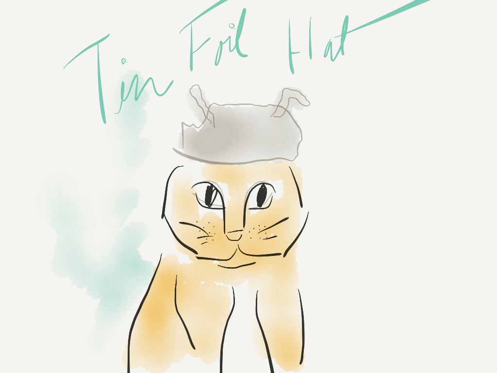
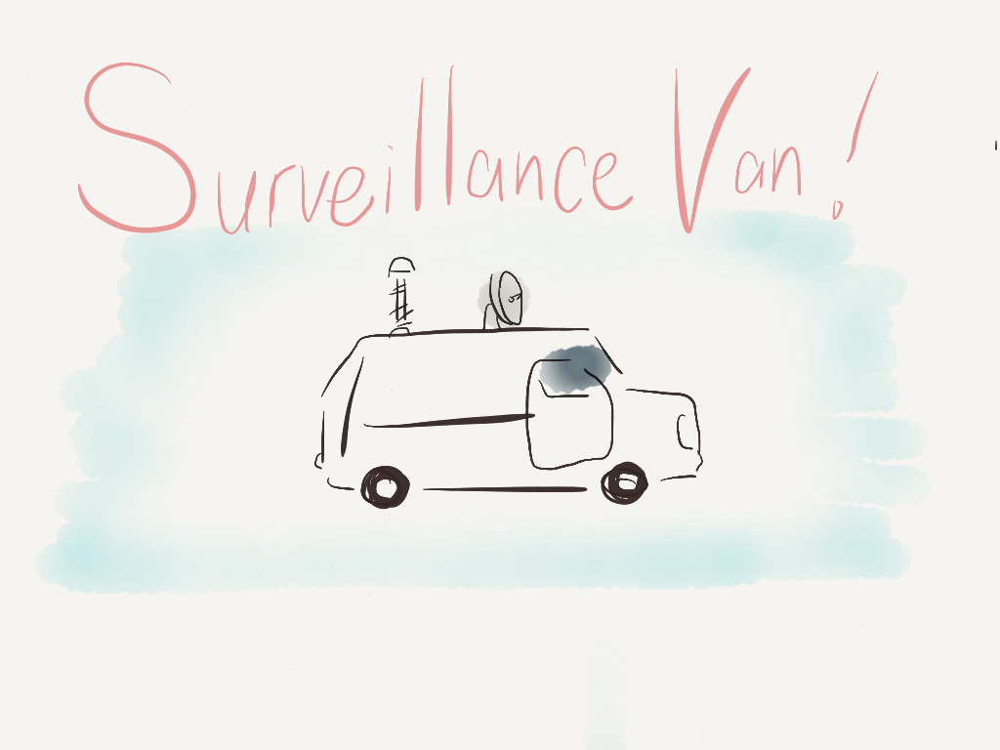
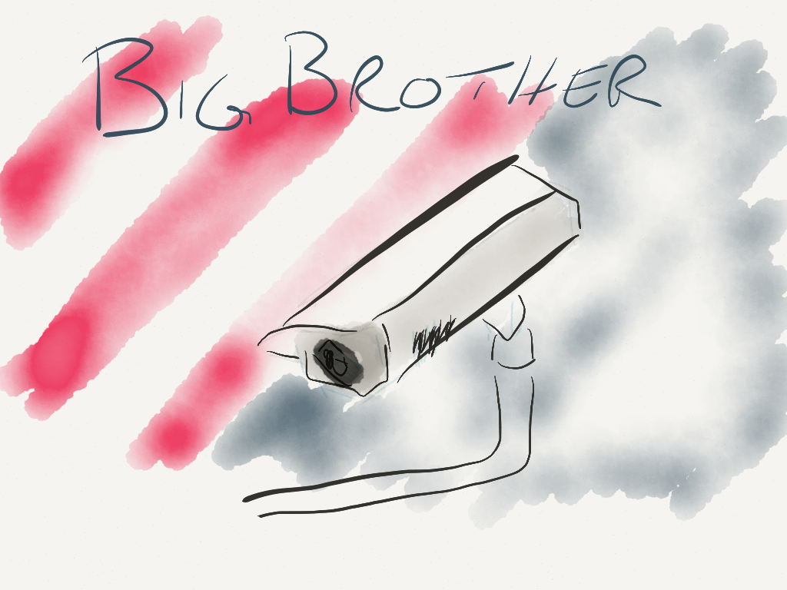
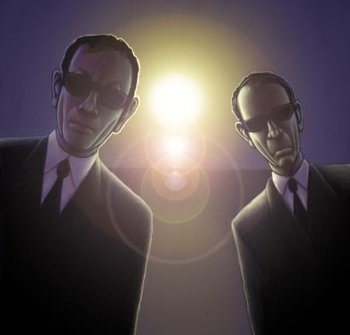

|

|
Tinfoil Hat Guy IPA
"The tinfoil hat loonies were right all along"
For many years, I thought that to get placed under surveillance, you had to be pretty reckless about sticking your neck out. For many years, that was true. Physical wiretaps, secret bugs, long-lens cameras and undercover operatives were the state of the art, and they were expensive. It was easy to make the argument that if you weren’t a troublemaker, you’d be okay.
In those days, people who thought the government was monitoring them were routinely dismissed as paranoid conspiracy theorists. I used to think so myself. I thought they were the lunatics on the fringe. If you went to extremes to escape government surveillance without actually being a high-level diplomat, a top executive, criminal, terrorist, or spy, I’d think you were crazy.
In those days, this harsh judgement may have been right, but it is now 2015, and on surveillance, the tinfoil hat brigade has been vindicated.
Keep Reading...
|
|

|
Surveillance Van Pale Ale
Turn on any cop show, and the surveillance always seems pretty straightforward. There are always a couple of guys in a van and maybe another two in a car outside some apartment building. But the truth is, real surveillance is much more subtle.
"How do you know they're watching us?"
"Because that pool cleaner's van has been parked out on the street for over four hours. No one's pool is that dirty."
— Sandra Bennet, Heroes
Keep Reading...
|
|

|
Big Brother Porter
For a while, every time I borrowed a book from my local library in Washington, D.C., I was greeted by an Orwellian poster: “Big Brother Is Watching You!” I often wondered if others paused to reflect on the implication of these words, if they understood how profoundly living under surveillance distorts a society. It transforms your perspective, your manners, your relationships with friends, colleagues, students, with every waiter and cabdriver you meet. It changes your relationship with yourself.
Keep Reading...
|
|

|
Dark Agent Stout
Black suit. White shirt. Black tie. Sinister Shades. Ominous and overbearing manner. Speaking in code. No indication of emotions or a personality. Ostensibly some kind of covert operative, but very conspicuous. They are simultaneously imposing and nondescript, which fits their mission perfectly.
If he has a name, expect it to be an obvious pseudonym, one of the most common Anglo-Saxon names, such as "Mr. Smith", "Mr. Jones", "Mr. Brown", etc., or else he'll be Mister Strangenoun.
Generally, they are in the business of keeping secrets. Laser-Guided Amnesia is a pretty common tool in their arsenal, but maybe they'll just bully you into keeping your mouth shut. Or just make you disappear. Less often, they'll make An Offer You Can't Refuse.
Conspiracy Theorists live in fear of the Dark Agent. They know too much.
Keep Reading...
|